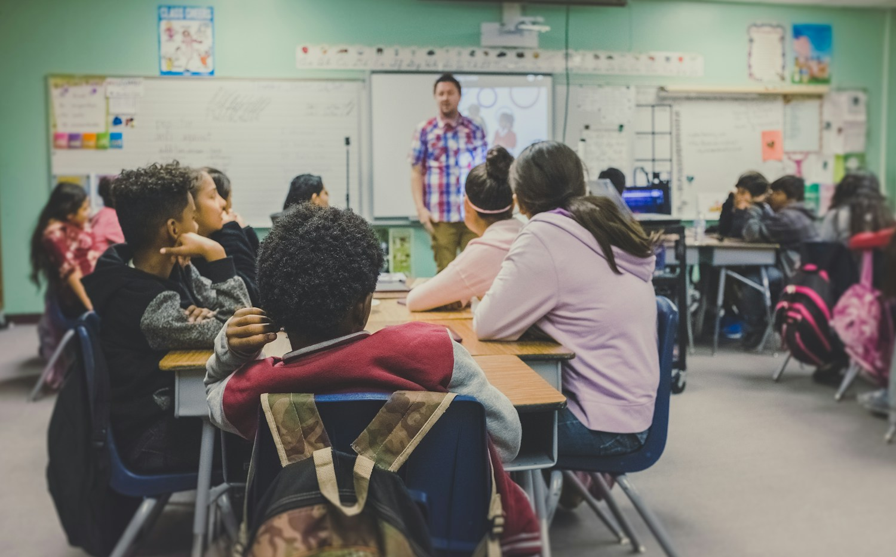

People who show up.
Volunteers bring their time, energy, and perspectives into the classroom. Connection is where learning begins.
LEARNING WITH CURIOSITY. GROWING WITH CONFIDENCE.
Volunteer-led math and science learning, shaped around each grade. Explore our curriculum, find individual support, or help a student take their next step.
THE CURRICULUM
Math, biology, chemistry, physics, and earth science—introduced at the right level, with room to ask questions and understand the ideas. Choose a grade band to explore a sample lesson.
SAMPLE LESSON IDEA
Explore early math and science through familiar things. Young learners notice shapes and patterns, observe the natural world, and share what they discover.
Bring learning to your schoolChoose an everyday object. Look closely, draw what you notice, and share one question it makes you wonder about.
A glimpse of what’s possible. These are illustrative lesson ideas; the BTS curriculum will be added here.

Illustrative classroom photo · UnsplashHELLO, WE’RE BREAKING THE SKY
We’re a nonprofit with a simple belief: a new perspective can open a whole new world. BTS connects volunteers with schools to bring curriculum-based learning to students at different grade levels.
Volunteers bring their time, energy, and perspectives into the classroom. Connection is where learning begins.
A curriculum gives each visit direction, with lessons shaped around students’ grade levels and ways of learning.
We want students to ask questions, share their thinking, and imagine what could come next—for themselves and their communities.
WHY WE SHOW UP
A different perspective. A question nobody has asked before. Someone who takes the time to listen.
We believe these little moments matter. Breaking the Sky is about making space for them—in the classroom, through connection, and one new idea at a time.
Meet the people behind BTS1-ON-1 TUTORING
Sometimes a little individual attention can make a big difference. Our 1-on-1 tutoring focuses on the math and science topics you want to understand better, with room to ask questions, revisit tricky ideas, and work through problems.
Tell us your grade level, learning goals, and availability. We’ll discuss what support may be possible and how it could fit your needs.
Request 1-on-1 tutoringGOOD THINGS START WITH PEOPLE
Bring your curiosity. We’ll make room for it.
FOR VOLUNTEERS
Help bring grade-level lessons to life. Share your perspective, encourage questions, and be part of a student’s learning journey.
Apply to be a volunteerFOR STUDENTS & FAMILIES
Looking for help with math, biology, chemistry, physics, or earth science? Tell us your grade level, what you’re working on, and where you’d like some help.
Request 1-on-1 tutoringBringing BTS to your school?
We’d love to hear about your students and your ideas.
WE’D LOVE TO HEAR FROM YOU
Questions about a lesson, a school visit, or getting involved? Start a conversation with Breaking the Sky.
ammarashary@gmail.comA FEW GOOD QUESTIONS
BTS is a nonprofit that brings volunteers into schools to teach using a curriculum adapted for different grade levels. Our focus is connecting people, ideas, and classroom learning.
The program is built around learning at different grade levels. This preview shows sample ideas for K–2, 3–5, 6–8, and 9–12. Final grade coverage and curriculum details will be confirmed by BTS.
Complete the volunteer application with your interests, experience, and availability. Review your answers, then open the prepared email and send it to BTS. Applying is an expression of interest, not confirmation of a placement.
Email ammarashary@gmail.com with your school, grade levels, and what you have in mind. For individual learning support, use the tutoring request form.